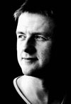

Guðmundur Jón Guðjónsson er kennari í vefhönnun á tölvubraut Upplýsingatækniskólans.
| 1.önn | 2.önn | 3.önn 2/3 | 3.önn 1/3 |
|---|---|---|---|
| Grunnnámi tölvubrautar lýkur með sameiginlegu lokaverkefni úr FOR, GSÖ, TÆK og VSH. | |||
| FOR1A3 | FOR2A3 | FOR2B2 | GRU2L |
| GSÖ1G2 | GSÖ1F2 | GSÖ2B2 | GRU2L |
| TÆK1A2 | TÆK2A3 | TÆK2B2 | GRU2L |
| VSH1A3 | VSH2A3 | VSH2B2 | GRU2L |
Upplýsingatækniskólinn menntar fólk til starfa við allar hliðar nútíma fjölmiðlunar og tölvutækni, annars vegar af fjölmiðlabraut og af tölvubraut.
Markmið með námi á tölvubraut er að nemendur öðlist haldgóða þekkingu á sem flestum sviðum tölvutækninnar Tölvubrautinni er ætlað það hlutverk að vera ávallt í forystu í kennslu tölvufræða á framhaldsskólastigi í íslenskum framhaldsskólum.